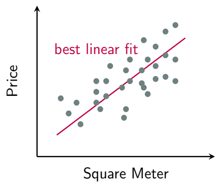
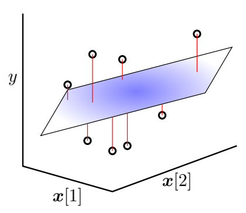

线性回归
在机器学习领域，回归 (Regression) 分析是用于预测连续数值型输出的核心技术之一。与旨在预测离散类别的分类问题不同，回归旨在建立一个模型，来描述输入特征与一个连续输出值之间的关系。
线性回归模型
回归 (Regression)
让我们从一个经典的例子开始：预测房价。假设我们收集了一批房屋的销售数据，其中包含了房屋的
面积（平方米）和其对应的售价（万元）。
上图中的每一个点代表一个历史销售记录：
- 是输入特征（这里是房屋面积）。
- 是一个连续的、真实的数值型输出（房屋价格）。
回归任务的定义：给定一组训练数据，我们的目标是学习一个模型，它能够捕捉输入 和输出之间的潜在关系。学习完成后，当给定一个新的输入时，模型能够给出一个尽可能准确的连续值预测。
线性回归模型 (The Linear Regression Model)
面对上述散点图，最简单、最直观的假设是：房价与面积之间存在线性关系。这种假设催生了线性回归 (Linear Regression) 模型。
- 一维线性回归对于只有一个输入特征（如房屋面积）的情况，线性模型可以表示为一条直线：这里的 是直线的斜率，代表面积每增加一平方米，价格的增长量； 是截距。我们的目标就是找到那条“最佳拟合”的红线。
 - 多维线性回归 (Multi-dimensional)在现实世界中，决定房价的因素远不止面积一个。我们可能还会考虑地段、学区、楼层、建造年份等多个特征。这时，输入就变成了一个维的特征向量：此时，线性模型从一条直线扩展为一个超平面 (Hyperplane)。模型的数学形式（采用吸收了偏置项的紧凑写法）为：其中，是模型的权重向量。我们的目标就是找到一个最优的权重向量，使得由它定义的超平面能够最好地拟合所有数据点。注意，当我们采用吸收偏置项的写法时，，：

求解最佳拟合：最小二乘法
我们如何从数学上定义“最佳拟合”？直观地看，最佳的超平面应该使得所有数据点到它的“整体距离”或“总误差”最小。
损失函数 (Loss Function)
- 损失函数 (Loss Function)对于单个数据点，其误差（也称为残差 (residual)）是真实值和模型预测值之间的差值。为了衡量这个误差，我们最常使用的是平方误差损失 (Squared Error Loss)，也称为-损失：选择平方误差的原因有三：它能保证误差值为非负；它会对较大的误差给予更重的惩罚；它在数学上性质良好，便于求导优化。
- 最小二乘法 (Least Squares)将所有个数据点的平方误差加起来（或取平均），就构成了我们的目标函数 (Objective Function)。最小二乘法 (Least Squares, LS) 的核心思想就是：寻找能使这个总平方误差最小化的那组参数。因此，我们的学习问题被形式化为以下的最优化问题：我们找到的最优解就是最小二乘解。这里除以，是为了使目标函数的大小不受样本数量的影响。
矩阵表示 (Matrix Notation)
虽然求和（）的形式很直观，但在进行理论分析和实际计算时，使用矩阵和向量来表示会更加简洁、高效。
- 数据矩阵化：我们将所有数据样本整合为矩阵和向量。
- 设计矩阵 (Design Matrix) ：将所有输入特征向量作为行，堆叠成一个的矩阵（行，每一行代表一个样本点；列，每一列代表一个属性/特征）。
- 此外，为了将偏置项纳入统一的矩阵运算，我们在原始特征的最左边加上一列全为的列向量。这样，原来的列就变成了列。
- 目标向量 (Target Vector) : 将所有输出标签堆叠成一个的列向量。
- 设计矩阵 (Design Matrix) ：将所有输入特征向量作为行，堆叠成一个的矩阵（行，每一行代表一个样本点；列，每一列代表一个属性/特征）。
- 最小二乘法的矩阵形式利用矩阵运算，我们可以一次性计算出所有样本的预测值和误差：
- 所有样本的预测值向量：。
- 所有样本的误差向量：。
而目标函数中的“总平方误差”，恰好等于误差向量的L2范数的平方。因此，最小二乘法的优化目标可以被等价地、更紧凑地写为：这种矩阵形式不仅在符号上更为优雅，更重要的是，它为我们通过微积分直接求解最优解（即正规方程 Normal Equation）铺平了道路，并且在计算上可以充分利用高效的线性代数库。
现在完成了从定义回归问题、选择线性模型、到构建最小二乘目标函数并将其矩阵化的全过程。明确了学习的目标就是找到最小化总平方误差的权重向量。下一步，我们将探讨如何具体地求解这个最优化问题。
求解最优化问题
我们的目标是找到一个最优的权重向量，来最小化最小二乘目标函数：
为了推导方便，我们暂时忽略了不影响最小值位置的常数因子，得到最优化的目标函数：
梯度等于零：正规方程
为了找到使损失函数最小的，我们可以使用微积分的方法：对求梯度，并令梯度等于零。
- 展开目标函数首先，我们将L2范数的平方展开为向量的转置与自身的乘积：利用矩阵转置的性质和，我们继续展开：由于是一个标量，它的转置 与其自身相等。因此，中间两项可以合并：
- 对求梯度现在, 我们对上式关于求梯度。这里需要用到两个矩阵微积分的结论:
- (当为对称矩阵时)
注意到，是一个对称矩阵，因此我们可以应用上述规则： - 令梯度为零由于最小二乘的目标函数是一个凸函数，其最小值点出现在梯度为零的位置。因此我们令：简化后，我们得到一个非常重要的方程：这个方程被称为正规方程 (Normal Equation)。任何能够最小化平方误差的都必须满足这个方程。
情况一：唯一解 (满秩情况)
现在的问题是如何从正规方程中解出。这里需要分情况讨论。
- 条件：假设输入矩阵是列满秩 (full column rank) 的，即。这意味着的所有列向量（即所有属性/特征）是线性无关的。这在且特征之间不存在精确线性关系时通常成立。
- 推论：如果列满秩，那么矩阵 (一个的方阵) 一定是可逆的 (invertible)。
- 闭式解 (Closed-form Solution)：既然可逆，我们可以通过在正规方程两边同时左乘其逆矩阵来直接解出：这就是线性回归的闭式解。只要我们获得了数据和，就可以通过一次矩阵运算直接计算出最优的模型参数。
当列满秩时，矩阵的伪逆 (Pseudo-inverse) 恰好等于。因此解也可以写为：
情况二：非唯一解 (秩亏情况)
- 条件：假设输入矩阵不是列满秩的，即。这种情况通常发生在：
- 特征数量大于样本数量 () ：这是一个典型的过拟合 (overfitting) 场景。
- 特征间存在多重共线性：多个自变量（特征）之间存在高度相关性。例如，同时将“以米为单位的身高”和“以厘米为单位的身高”作为特征。
- 推论：此时，矩阵是奇异的，不可逆。
- 结果：我们无法得到唯一的闭式解。正规方程将拥有无穷多个解。这意味着存在无穷多个解对应的参数，它们都能使得训练误差达到相同的最小值。
我们可以用一个统一的数学形式来表示这无穷多组解。
最小二乘法：几何解释
回顾最小二乘法
我们有组观测数据，每组数据包含个自变量 () 和一个因变量 () 。我们的目标是找到一组最佳的系数，使得由自变量构建的线性组合能够最好地拟合因变量。
- 真实值 () ：我们实际观测到的值。
- 预测值 () ：我们用找到的系数算出的值，例如。
- 残差 () ：真实值与预测值之间的差距，即。
直观目标：我们希望找到的这条“最佳拟合线(或面)"是这样的：它使得所有数据点到这条线的“整体
距离”最小。
最小二乘法：定义这个“整体距离”为所有残差的平方和 (Sum of Squared Residuals, SSR)。我们之所以用平方，是为了避免正负残差相互抵消，并且能够放大（惩罚）那些远离拟合线的点。
所以，最小二乘法的任务就是找到一组参数，来最小化这个残差平方和。
将上述凌乱的方程组转化为简洁的矩阵形式：
- ()：包含了所有个观测结果的向量。
- ()：设计矩阵，整理了所有观测数据的所有自变量值。第一列全为1，是为了对应截距项。
- ()：我们要求解的系数向量。
- ()：包含了所有个残差的向量。
现在，残差平方和也可以用矩阵优雅地表示。残差向量是。一个向量与自身的点积（即）等于其所有分量的平方和。因此：
最小化这个残差平方和，得到优化目标：
其中，是一个固定的维向量，的每一列（共列）也都是维空间中的一个向量。根据矩阵乘法的“列视角”，由这个列向量通过线性组合（即乘以系数）所能张成的所有向量的集合，构成了一个子空间：
当我们尝试所有可能的系数时，这些列向量的全部线性组合所构成的集合，就形成了一个子空间。这个子空间就是X的列空间 (Column Space)，记作，其包含了所有可能的预测值。如果 的各列线性无关，这个子空间的维度就是。
即最小化到的欧式距离，在这个维空间里，我们的目标是找到一个在子空间内的向量，使得它与真实值向量的欧氏距离最小。
根据线性代数的推论，在一个子空间中，与空间外一点距离最近的点，正是这个点在该子空间上的正交投影 (Orthogonal Projection)。
因此，最小二乘解（预测值向量）的几何本质是真实值向量在的列空间上的正交投影。其差值就是误差向量。
注意：图中的平面代表的是的列空间，即张成的子空间，而不是模型在特征空间里的一个超平面。
以一维线性回归为例
以一维线性回归为例，我们有三个样本，分别是, , 和。使用这三个数据点来寻找一条最佳拟合直线。
我们的目标是求解最优的斜率和截距。根据最小二乘法的原则，我们需要最小化预测值与真实值之间的平方误差之和。
代入具体的数值，就是：
可以直接对和求偏导来求解，这里使用更具一般性的矩阵方法来能揭示其几何本质。
构建矩阵和向量（由增广后的特征向量堆叠而成）：
新的几何图像：真实值构成了三维空间中的向量。矩阵的两个列向量 (代表偏置) 和 (代表原始特征) 张成了一个二维平面，这就是列空间。我们的目标是在这个平面上找到点（预测值向量），使其与（真实值向量）的距离最近。
代数求解：使用正规方程来求解最优参数。
我们得到了最优参数。这意味着最佳拟合直线的截距
，斜率。所以，最佳拟合直线方程是。
现在，我们来计算在平面上的投影，并验证误差向量是否与该平面正交。
①计算预测值向量：
这个就是平面上离最近的点。它的三个分量分别是当时，最佳拟合直线给出的预测值。
②计算误差向量：
③检验误差向量是否与平面正交：
误差向量与张成平面的两个基向量都正交，这意味着它垂直于整个由模型预测构成的平面。这个数值计算过程清晰地展示了：通过代数方法（正规方程）找到的最小二乘解，在几何上恰好对应着将真实数据向量投影到模型能表示的空间（列空间）上。
最小二乘法：最大似然估计解释
在线性回归中，最小二乘法（Least Squares, LS）等价于在误差项服从高斯分布（正态分布）假设下的最大似然估计（Maximum Likelihood Estimation, MLE）。
线性回归的目标是找到一组参数，使得模型预测值与真实观测值之间的差距最小。最小二乘法通过最小化残差的平方和（Sum of Squared Errors, SSE）来实现这一目标。其目标函数为：
回顾之前定义的模型，是第个样本的真实值，是第个样本的特征向量，是模型的预测值。
误差项独立同分布假设
为了从概率角度解释，我们假设模型的预测不可能是完全准确的，总是存在一个随机的、不可预测的误差项。因此，模型可以更精确地写为：
这里，我们对误差项做出一个非常关键的假设：
假设所有的误差项都是独立同分布 (i.i.d.) 的，且服从均值为，方差为的高斯分布（正态分布）。
这是一个非常常见的对随机误差的假设，因为中心极限定理告诉我们，许多独立随机过程的总和趋向于高斯分布。
将所有个样本的方程合在一起，我们可以得到矩阵形式：
其中，是一个的误差向量。由于每个都是独立同分布的，整个误差向量就服从一个多维高斯分布，其均值为向量，协方差矩阵为。
因为各个相互独立，所以协方差矩阵是一个对角矩阵（只剩下自身与自身的协方差，即方差）。又因为它们的方差都相同（为），所以。
从最大似然估计推导最小二乘法
从最大似然估计的目标函数，可以得到与最小二乘法完全一致的目标函数。
最大似然估计（MLE） 的思想是：我们已经观测到了数据，现在要去反推，在哪一个参数的设定下，观测到当前这组数据的概率（似然）最大？
首先，需要知道服从的是哪一个形式已知但参数未知的概率分布，由于服从高斯分布。所以也服从高斯分布。具体来说：
因此，我们可以得到的概率分布（其中是未知参数）：
现在就可以表示的概率（似然）了，这个“概率”由的概率密度函数（PDF）给出。
对于一个维向量，其多元高斯分布的概率密度函数PDF为：
那么，对于一个维向量，其多元高斯分布的概率密度函数PDF为：
这个函数就被称为在给定数据（这里就是）下的似然函数。我们的目标是找到能最大化这个函数的参数。
直接最大化上面的似然函数很困难，因为它包含指数项。因此，我们构建对数似然函数。
我们的目标是找到参数来最大化。
观察上式，第一项中不包含任何与相关的变量，因此在求最大值时，它是一个常数项，可以忽略。所以，最大化就等价于：
去掉负号和常数会将最大化问题转变为最小化问题：
现在，我们将之前的代入 ，所以它的逆是 。 代入后，最小化问题变为：
我们知道，向量和其自身转置的乘积就是该向量的范数的平方，即。所以。
再去掉无关的，最终，我们问题变为：
这正是最小二乘法。
总结：我们从一个概率模型（假设误差是独立同分布的高斯噪声）出发，通过最大似然估计的方法，推导出了我们最终需要优化的目标函数。这个目标函数——最小化——与我们最初介绍的最小二乘法的目标函数是完全一样的。
这个推导过程告诉我们： 使用最小二乘法来求解线性回归，其背后隐含了一个重要的假设，即模型的随机误差服从高斯分布。
该估计属于无偏估计
我们通过最小二乘法（LS）或最大似然估计（MLE）得到的参数估计值，在多大程度上是一个“好”的估计？评估估计器好坏的一个重要标准就是无偏性（Unbiasedness）。
- 真实模型（Ground Truth）: 假设存在一个真实的、我们未知的参数。我们观察到的数据是由这个真实模型加上一个随机噪声生成的。并且，我们假设噪声的期望（均值）为零：。这是我们之前高斯噪声假设的一部分。
- 我们的估计器（Estimator）: 通过最小二乘法（或MLE），由前文可知，当正规方程有唯一解时：
- 连接真实与估计：将真实模型代入估计器的公式中：根据，可以简化：由此，得到一个至关重要的关系：这个公式告诉我们：估计值等于真实的参数值加上一个由随机噪声引起的误差项。
- 无偏性的定义: 如果一个估计器的估计值的期望值等于参数的真实值，那么它是无偏的。也就是说，如果我们能够使用不同的随机噪声多次重复我们的实验（即多次采样得到不同的），每次都计算出一个估计值。那么，所有这些的平均值将会等于真实的。一个无偏的估计器在平均意义上是准确的，不会系统性地偏高或偏低。
证明估计器的无偏性 (Unbiased Estimator)
现在，我们来完成最后的证明。我们需要计算的期望值。
我们从上面导出的关键关系式出发，对等式两边同时取期望：
根据期望的线性性质，上式可以分解为：
- ：是一个描述真实世界模型的固定参数向量，它不是一个随机变量。因此，它的期望就是它本身。
- ：在线性回归问题中，输入值（特征矩阵）是固定的、非随机的，因此，由计算出的伪逆也是一个固定的矩阵，不是随机变量。根据期望的性质，常数矩阵可以从期望中提出。此外，我们之前假设了，因此噪声的期望为0。
将这两项的结果代回原式：
我们成功证明了。这表明，在线性回归模型中，由最小二乘法或高斯误差假设下的最大似然估计得到的参数估计器是一个无偏估计器。
这是一个非常理想的性质，它意味着我们的估计方法在方向上是正确的，不会产生系统性的偏差。尽管任何单次实验得到的几乎肯定会因为随机噪声的存在而偏离，但从大量重复实验的平均来看，我们的估计是准确的。
回归与分类总结
回归 vs. 分类
回归 (Regression)：预测一个连续 (continuous)的数值。例如，根据房屋的面积、位置等特征预测其价格。下图展示了回归任务。蓝色的点是训练数据，它们大致呈线性趋势。线性回归的目标是找到一条直线（红色线），这条直线能最好地“拟合”这些数据点。预测值可以是任意实数。
分类 (Classification)：离散 (discrete)的类别标签。例如，判断一封邮件是“垃圾邮件”还是“非垃圾邮件”。下图展示了分类任务。数据点被分成了两个类别（蓝色代表和红色代表）。分类器的目标是找到一条边界（图中的黑线），将这两个类别分开。预测值只能从一个有限的集合中取值，比如这里的。
逻辑回归 vs. 感知机
这两者都是用于分类的线性模型，但它们的学习目标和鲁棒性不同。
- 感知机 (Perceptron)：找到任何一条能将训练数据完全正确分开的直线（超平面）。只要所有正样本点（+1）都在直线的一侧，所有负样本点（-1）都在另一侧，感知机就认为任务完成了。它不在乎这条线离数据点有多近，只要分开即可。感知机算法有一个很强的假设，即数据必须是线性可分的 (linearly separable)。如果数据本身无法被一条直线完美分开，那么感知机算法将永远不会停止，会一直振荡下去。
- 逻辑回归 (Logistic Regression)：LR的目标更为“柔和”且“稳健”。它不仅要找到一条分界线，还希望这条线能让分类结果的“置信度”尽可能高。具体来说，它通过最小化逻辑损失函数，试图让正样本点尽可能远离分界线并处于正方向（即），同时让负样本点也尽可能远离分界线并处于负方向（即）。这种特性使得LR找到的边界通常位于两类数据点的“正中间”，具有更好的泛化能力。LR不要求数据是线性可分的。即使数据有重叠，它也能通过最小化整体损失，找到一条“最佳”的拟合分界线。
相对于感知机，逻辑回归通常是更好的选择，因为它找到的决策边界更鲁棒（有“间隔”的思想），并且即使在数据线性不可分的情况下也能正常工作。
逻辑回归 vs. 最小二乘法 (线性回归)
这两者都是广义线性模型，但逻辑回归专为分类 (Classification) 问题设计，最小二乘法专为回归 (Regression) 问题设计。
- 逻辑回归：使用逻辑损失 (logistic loss) 。其目标函数是：没有解析解 (No closed-form) 。我们无法写出一个直接的公式来求解最优的。必须使用像梯度下降 (Gradient Descent) 这样的迭代式优化算法，一步步地逼近最优解。
- 最小二乘法 (即线性回归)：使用平方损失 (squared -norm loss) 。其目标函数是最小化预
测值与真实值之间的平方误差和：有解析解 (Closed-form solution) 。这意味着我们可以通过一个直接的数学公式一步到位地计算出最优参数，无需迭代。
💬 评论区